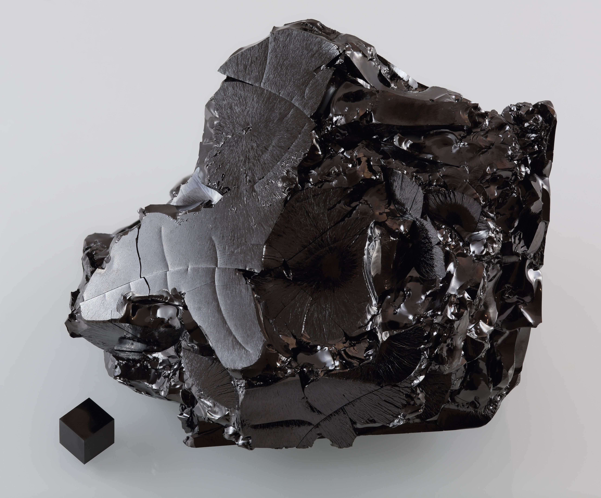

이 글을 쓰게 된 이유는 탄소 원소가 만들 수 있는
분자의 다양성과 그 결합 형태에 따른 다양한 물질의
특성을 이해하고 설명하고자 했기 때문이다.
탄소는 비금속 원소 중에서 고체 형태로
존재하며 결합력이 뛰어나 다양한 물질을
형성할 수 있는 독특한 성질을 가지고 있다.
이 글을 통해 그래핀, 나프탈렌, 안트라센,
벤젠 등 여러 탄소 화합물의 구조와 특성을
설명함으로써 탄소 화학의 흥미로운 세계를 탐구하고자 한다.
탄소( C ) 금속 원소가 아닌 것 중에서 유일한 고체 형태로
결합력이 매우 뛰어나다. 어떻게
결합되느냐에 따라 다양한 물질이 생성된다.

분자에 집합이?! 집합을 이용하여 원소 개수 구하기
Naphthalene
나프탈렌( C10H8 ) :나프탈렌은 벤젠 2개가 붙어있는 것과 같다.
그러나 탄소원자가 12개가 아니라 10개이다!
n(AUB)= n(A) + n(B)- n(A∩B)
6+6-2=10
Anthracene
안트라센( C14H10 ) 안트라센은 벤젠 3개가 결합되어 있는 구조이다.
이들을 집합을 이용해 계산해보면
( AUBUC )= n(A)+n(B)+n(C)-n(A∩B)-n(B∩C)
Graphene
그래핀( C 탄소 공유결합 ) 그래핀의 구조 또한 앞서 나온 분자들의 구조와 비슷하다.
3개일때 n(AUBUC)=n(A)+n(B)+n(C)-n(A∩B)-n(B∩C)-n(A∩C)+n(A∩B∩C)이니
이를 이용하여 11개의 고리형태의 원소개수를 구하면 36개가 나온다.
벤젠.. 너 이런 아이였구나! 벤젠을 바탕으로 이루어지는…
벤젠( C6H6 ) 화학식 C6H6를 갖는 탄화수소로 무색이며
달콤한 냄새가 나는 가연성 액체이다.
벤젠은 여섯 개 탄소가 정육각형 평면을
이루며 각 탄소에는 하나의 수소가 결합한다.
Toluene
톨루엔이 만들어지는 경우의 수
벤젠+메틸기 하나= 톨루엔 벤젠은 탄소 6개
각각 모서리에 메틸기 붙임
톨루엔이 6가지 존재하는 것이 아닌 1가지만 존재한다.
다 같은 톨루엔이 생성되어서 어느 모서리에 결합해도
구별이 안되기 때문이다.
Xylene
자일렌이 만들어지는 경우의 수
벤젠에 메틸기가 2개 붙으면 자일렌이 된다. 톨루엔은 경우의 수가 하나였으나 자일렌은 3가지이다.
메틸기가 붙어있는 탄소 기준
바로 옆 탄소- 오르토 자일렌
하나 건넌 탄소- 메타 자일렌
반대편- 파라 자일렌 원자의 수와 종류는 같으나 다른 물질이므로 녹는점과 밀도가 다르다.
Hexane
헥세인이 만들어지는 경우의 수 헥세인은 탄소를 3종류로 나눈다
바깥쪽(1,6번) 그 안쪽(2,5번)
가장 안쪽(3,4번) 그래서 메틸기를 붙일수 있는
경우의 수는 3가지, 2개를 붙일 수 있는 경우의
수는 3X3=9, 9가지이다.
Decane
데케인의 경우의 수 데케인에 메틸기 2개를 붙일 수 있는 경우의 수는
헥세인과 똑같은 방법으로 구한다.
데케인은 헥세인과 같이 같은 부분으로
여기는 탄소가 5부분이어서 메틸기 2개를
붙일 경우의 수는 5X5=25, 25가지이다.
주제에 대해서 탐구하고 이 글을 쓰면서
탄소의 결합 구조가 얼마나 다양하고 복잡하며,
이러한 구조가 각 물질의 물리적,
화학적 특성에 얼마나 큰 영향을 미치는지에
대한 놀라웠다.
또한, 집합을 이용해 원소
개수를 구하고, 경우의 수를 이용하여
분자 결합 방법의 경우의 수를 구하는
방법을 통해 복잡한 구조를 간단하게
분석할 수 있다는 점이 매우 흥미로웠다.
우리가 앞으로 배우게 되거나 배웠던 내용으로
탄소 화합물의 구조를 알 수 있다는 것을 보고
화학과 수학은 정반대의 성질을 띠지는 않는다는
것을 알게 되었다. 탄소 화합물의 구조를 이해함으로써
우리는 다양한 산업 및 연구 분야에서 이를
응용할 수 있는 기초 지식을 얻게 되며,
이러한 지식이 실제 응용으로 이어질 때의
가능성에 대한 기대감이 커졌다.